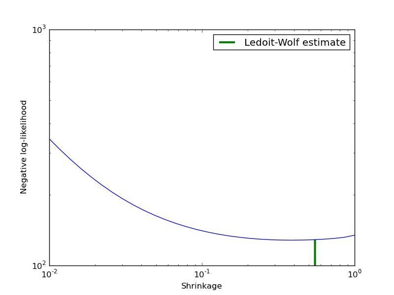

Ledoit-Wolf vs Covariance simple estimation¶
Covariance estimation can be regularized using a shrinkage parameter. Ledoit-Wolf estimates automatically this parameter. In this example, we compute the likelihood of unseen data for different values of the shrinkage parameter. The Ledoit-Wolf estimate reaches an almost optimal value.

Python source code: plot_covariance_estimation.py
print __doc__
import numpy as np
import pylab as pl
###############################################################################
# Generate sample data
n_features, n_samples = 30, 20
X_train = np.random.normal(size=(n_samples, n_features))
X_test = np.random.normal(size=(n_samples, n_features))
# Color samples
coloring_matrix = np.random.normal(size=(n_features, n_features))
X_train = np.dot(X_train, coloring_matrix)
X_test = np.dot(X_test, coloring_matrix)
###############################################################################
# Compute Ledoit-Wolf and Covariances on a grid of shrinkages
from scikits.learn.covariance import LedoitWolf, ShrunkCovariance
lw = LedoitWolf()
loglik_lw = lw.fit(X_train).score(X_test)
cov = ShrunkCovariance()
shrinkages = np.logspace(-2, 0, 30)
negative_logliks = [-cov.fit(X_train, shrinkage=s).score(X_test) \
for s in shrinkages]
###############################################################################
# Plot results
pl.close('all')
pl.loglog(shrinkages, negative_logliks)
pl.xlabel('Shrinkage')
pl.ylabel('Negative log-likelihood')
pl.vlines(lw.shrinkage_, pl.ylim()[0], -loglik_lw, color='g',
linewidth=3, label='Ledoit-Wolf estimate')
pl.legend()
pl.show()